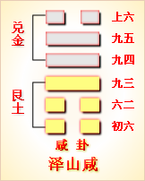

第三十一卦初六爻详解 第三十一卦六二爻详解 第三十一卦九三爻详解
第三十一卦九四爻详解 第三十一卦九五爻详解 第三十一卦上六爻详解
周易第三十一卦 咸 泽山咸 兑上艮下
咸：亨，利贞，取女吉。
彖曰：咸，感也。柔上而刚下，二气感应以相与，止而说，男下女，是以亨利贞，取女吉也。天地感而万物化生，圣人感人心而天下和平;观其所感，而天地万物之情可见矣!
象曰：山上有泽，咸;君子以虚受人。
初六：咸其拇。象曰：咸其拇，志在外也。
六二：咸其腓，凶，居吉。象曰：虽凶，居吉，顺不害也。
九三：咸其股，执其随，往吝。象曰：咸其股，亦不处也。志在随人，所执下也。
九四：贞吉悔亡，憧憧往来，朋从尔思。象曰：贞吉悔亡，未感害也。憧憧往来，未光大也。
九五：咸其脢，无悔。象曰：咸其脢，志末也。
上六：咸其辅，颊，舌。象曰：咸其辅，颊，舌，滕口说也。
咸卦卦象，泽山咸卦的象征意义
咸卦，本卦是异卦相叠，艮卦在下，兑卦在上。艮为山，为刚;兑为泽，为柔。兑柔在上，艮刚在下，就像山上的水向下渗透，滋养山上生长的万物，反过来山承载着泽。
《象》这样解释咸卦：山上有泽，咸;君子以虚受人。
《象》中指出：咸卦的卦象是艮(山)下兑(泽)上，为山上有泽之表象，即上方的水泽滋润下面的山体，下面的山体承托上方的水泽并吸收其水分的形象，因而象征感应;君子效法山水相连这一现象，以虚怀若谷的精神容纳感化他咸卦所要表达的是泽润山，山承泽，柔上而刚下，交相感应，像一对默契和谐的夫妻一样。所以历代文人多把咸卦解释为夫妻卦，认为咸卦是“恒明夫妇”之理。
咸卦由艮卦和兑卦相叠而成，艮代表少男，兑代表少女。从卦形上看，兑在上面，像温柔多情的少女在前面奔跑一般;艮为山在下，像壮实的小伙子在后面追赶着，一幅男亲女爱的相戏画面。咸卦所喻示的就是相互感应，属于中上卦。《象》中这样评断此卦：运去黄金失色，时来棒槌发芽，月令极好无差，且喜心宽意大。
【咸卦卦象，泽山咸卦的象征意义释义】
此卦卦名为咸，是《周易》下经的第一个卦。甲骨文的“咸”字是“戌”字与“口”字相合，表不用长柄大斧砍人头白勺意思。而此卦的“咸”字与“感”字是一个意思。即表示感应。《序卦传》中说：“有天地然后有万物，有万物然后有男女，有男女然后有夫妇，有夫妇然后有父子，有父子然后有君臣，有君臣然后有上下，有上下然后礼仪有所错。夫妇之道不可不久也，故受之以恒。”其所说的意思便是说明阴阳感应相合的重要性，并且着重阐明了人类社会中男女感应相合的重要作用。所以咸卦的“咸”字便是指男女阴阳感应相合的意思。《周易》上经以乾坤两卦开篇，接下来讲的便是天道与地道;《周易》下经以咸恒两卦开篇，接下来讲的便是人道。
卦画：咸卦的卦画是三个阳交三个阴爻。
卦象：从卦象上进行分析，咸卦上卦为兑为喜悦为少女为泽，咸卦下卦为艮为止为少男为山，所以山上有泽便是咸卦的卦象。泽为阴其十生质向下，山为阳其性质向上，山与泽相互感应相合，这是从大的方面进行取象。而上卦为少女，下卦为少男，男女相互感应相合，这是从人类的生活的特点进行取象。下卦为阳刚为停止，上卦为阴柔为喜悦，内心刚强而能止，外表柔顺而喜悦，这是从哲学的角度进行取象。而卦辞与爻辞则主要通过男女之间的感应相合而触类旁通，阐明阴阳感应相合的规律与作用。
关键词：周易,咸卦,泽山咸,兑上艮下
咸卦：亨通，吉利的占问。娶女为妻。吉利。
初六：脚大拇趾受了伤。
六二：小腿肚子受了伤，凶险。定居下来，吉利。
九三：大腿和大腿下部的内受了伤。伤后出行，会遇困难。
九四：占问吉利，没有悔恨。人来人往，实现了赚钱的愿望。
九五：背上受了伤，没有悔恨。
上六：牙床骨、面颊和舌头都受了伤。
咸是本卦的标题。咸的意思是受伤。全卦的内容主要是就梦中所见的 生活琐事进行占问。标题的“咸”字是卦中多见字。
取：用作“娶”。
拇：大脚趾。
腓(fei)：小腿肚子。
执：同“咸”，意思 也是受伤。随：用作“隋”，指股下隆起的肉。
憧憧：即童童，意思是 往来不绝的样子。
朋：朋贝，货币。
脢(mei)：背上的肉。
辅：意思是牙床骨。